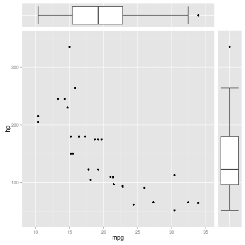

Диаграмма рассеяния с коробчатыми диаграммами по периметру
В последнее время при работе с R и RStudio мне с изрядной периодичностью приходится пользоваться коробчатыми диаграммами совместно с диаграммами рассеяния, к сожалению, в ggplot2 не существует (или я её еще не нашел) простой возможности удобного совместного расположения диаграмм таким образом, чтобы учитывались границы, интервалы и поля.
После изучения ряда инструкций по реализации требуемого функционала, я пришел к выводу что способ Sandy Muspratt, опубликованный в его блоге, является лучшим решением с точки зрения простоты и изящества.
Ниже представлен пример реализации, оригинал можно найти в блоге Сэнди.
Ссылки:
Пакеты
Помимо ggplot2 для корректного расположения диаграмм в строгом порядке пригодятся пакеты grid и gtable.
library(ggplot2)
## Loading required package: methods
library(grid) library(gtable)
Диаграмма рассеяния
Для начала построим диаграмму рассеяния, помимо стандартного взова ggplot и geom_point() нам потребуется пересчитать отображаемые границы диапазона данных. ggplot2 делает это по умолчанию с эстетической целью - точки данных так не будут совпадать с осями, однако нам нужно настроить границы точно для позиционирования коробочных диаграмм.
p1 <- ggplot(mtcars, aes(mpg, hp)) + geom_point() + # Удаляем дополнительные поля к отображаемому диапазону данных scale_x_continuous(expand = c(0, 0)) + scale_y_continuous(expand = c(0, 0)) + # Пересчитываем дополнительные поля expand_limits(y = c(min(mtcars$hp) - 0.1 * diff(range(mtcars$hp)), max(mtcars$hp) + 0.1 * diff(range(mtcars$hp)))) + expand_limits(x = c(min(mtcars$mpg) - 0.1 * diff(range(mtcars$mpg)), max(mtcars$mpg) + 0.1 * diff(range(mtcars$mpg)))) + # Настраиваем внешние границы theme(plot.margin = unit(c(0, 0, 0.5, 0.5), "lines"))
Коробчатые диаграммы
Строим коробчатые диаграммы, при этом настраиваем внешние границы графиков и границы отображаемого диапазона для соответствия диаграмме рассеяния. Дополнительно удаляем оси коробчатых диаграмм - они нам не нужны.
# Создаем тему без названий осей и меток theme_remove_all <- theme(axis.text = element_blank(), axis.title = element_blank(), axis.ticks = element_blank(), axis.ticks.margin = unit(0, "lines"), axis.ticks.length = unit(0, "cm")) # Горизонтальная коробчатая диаграмма p2 <- ggplot(mtcars, aes(x = factor(1), y = mpg)) + # Строим границы (whiskers) коробчатой диаграммы stat_boxplot(geom ='errorbar') + # Сама диаграмма geom_boxplot() + # Удаляем дополнительные поля к отображаемому диапазону данных scale_y_continuous(expand = c(0, 0)) + # Пересчитываем дополнительные поля expand_limits(y = c(min(mtcars$mpg) - 0.1 * diff(range(mtcars$mpg)), max(mtcars$mpg) + 0.1 * diff(range(mtcars$mpg)))) + # Поворачиваем диаграмму (по умолчанию коробчатые диаграммы вертикальны) coord_flip() + # Применяем тему с удаленными осями theme_remove_all + # Изменяем внешние поля theme(plot.margin= unit(c(0.5, 0, 0, 0.5), "lines")) # Вертикальная коробчатая диаграмма p3 <- ggplot(mtcars, aes(x = factor(1), y = hp)) + # Строим границы (whiskers) коробчатой диаграммы stat_boxplot(geom ='errorbar') + # Сама диаграмма geom_boxplot() + # Удаляем дополнительные поля к отображаемому диапазону данных scale_y_continuous(expand = c(0, 0)) + # Пересчитываем дополнительные поля expand_limits(y = c(min(mtcars$hp) - 0.1 * diff(range(mtcars$hp)), max(mtcars$hp) + 0.1 * diff(range(mtcars$hp)))) + # Применяем тему с удаленными осями theme_remove_all + # Изменяем внешние поля theme(plot.margin= unit(c(0, 0.5, 0.5, 0), "lines"))
gtables
Создаем объекты gtable с диаграммами для последующей верстки.
gt1 <- ggplot_gtable(ggplot_build(p1)) # Диаграмма рассеяния gt2 <- ggplot_gtable(ggplot_build(p2)) # Коробчатая горизонтальная диаграмма gt3 <- ggplot_gtable(ggplot_build(p3)) # Коробчатая вертикальная диаграмма
Настройка высоты и ширины
В gtable хранится вся информация, необходимая для построения графиков, в том числе и поля, выделяемые для отображения меток и названий осей. Нам нужно перезадать ширину и высоту диаграмм, чтобы верхняя коробчатая диаграмма не "налезала" на воображаемую ось Y диаграммы рассеяния, а коробчатая диаграмма справа не пересекала ось X.
# Максимальная высота и ширина maxWidth <- unit.pmax(gt1$widths[2:3], gt2$widths[2:3]) maxHeight <- unit.pmax(gt1$heights[4:5], gt3$heights[4:5]) # Задаем максимальные значения высоты и ширины в gtables для gt1, gt2 и gt3 gt1$widths[2:3] <- as.list(maxWidth) gt2$widths[2:3] <- as.list(maxWidth) gt1$heights[4:5] <- as.list(maxHeight) gt3$heights[4:5] <- as.list(maxHeight)
Верстка
# Создаем новую пустую gtable gt <- gtable(widths = unit(c(7, 1), "null"), height = unit(c(1, 7), "null")) # Вставляем gt1, gt2 и gt3 в gt gt <- gtable_add_grob(gt, gt1, 2, 1) gt <- gtable_add_grob(gt, gt2, 1, 1) gt <- gtable_add_grob(gt, gt3, 2, 2) # Строим рисунок grid.newpage() grid.draw(gt)
{kind=link}
Comments
Comments powered by Disqus